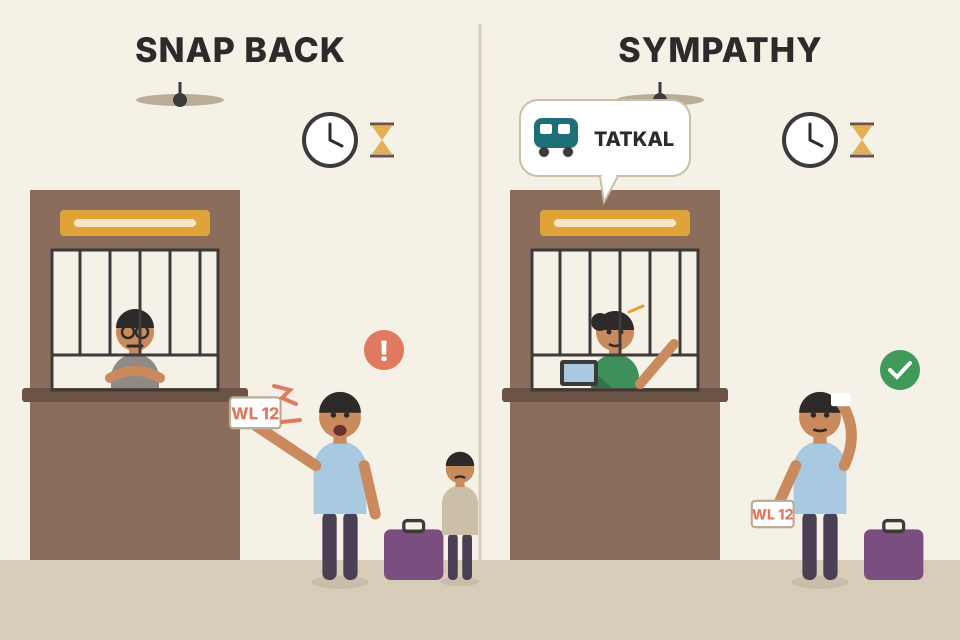
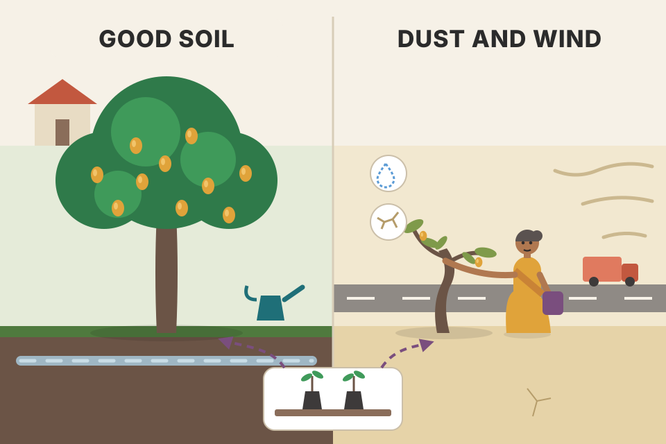
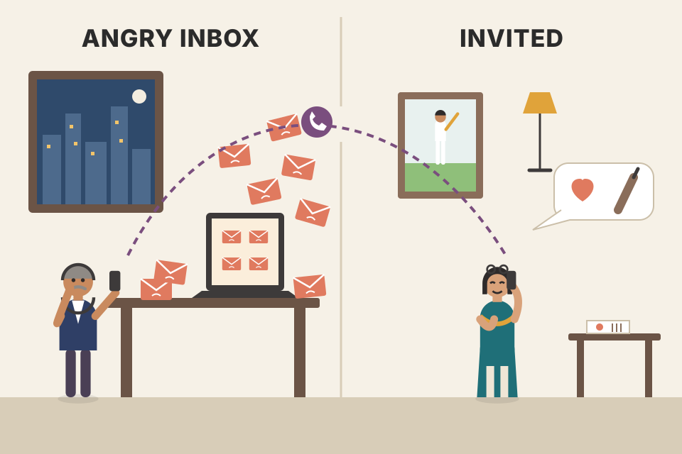
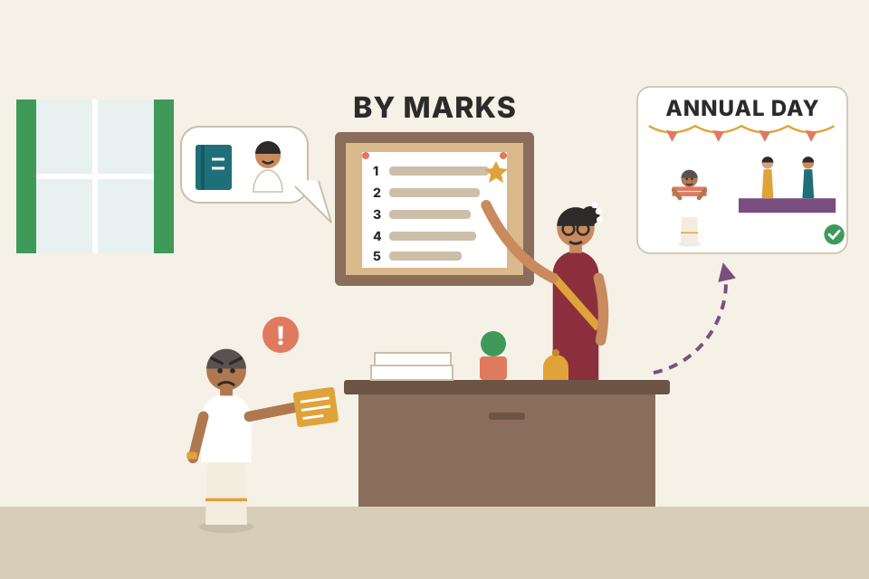
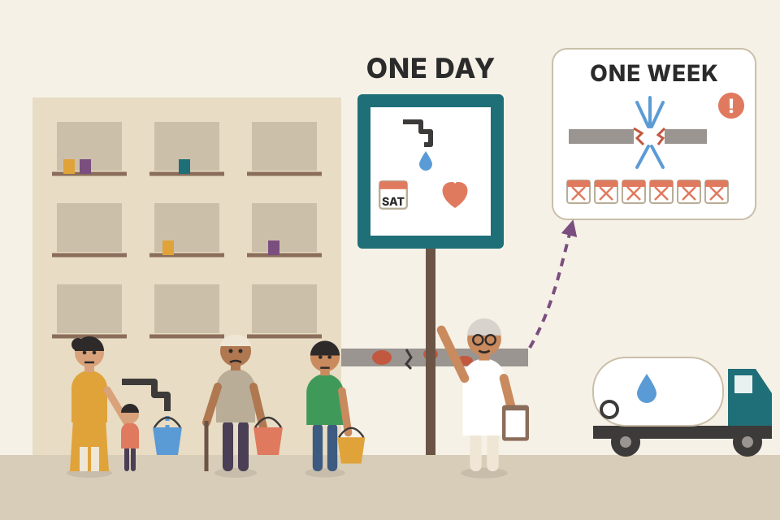
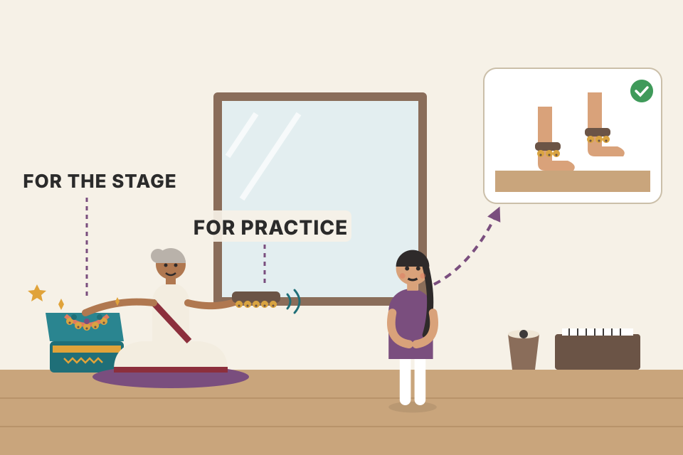
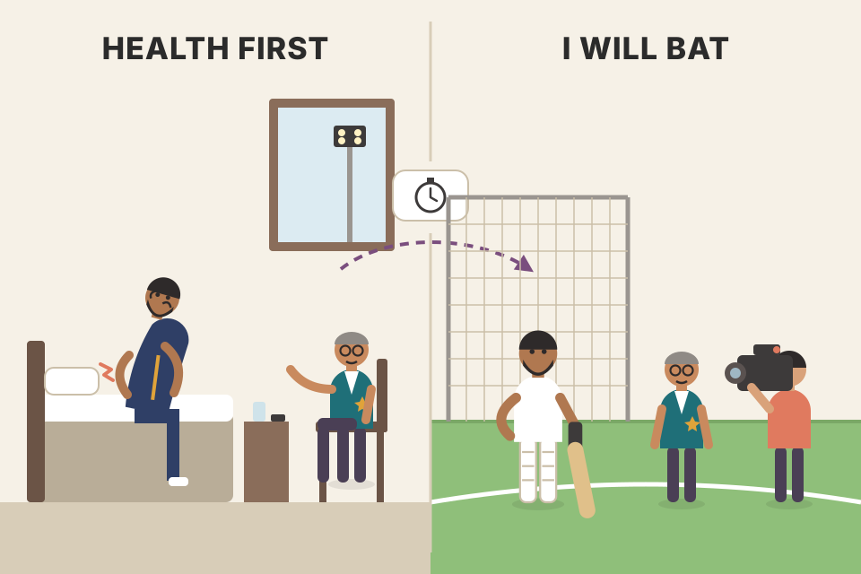
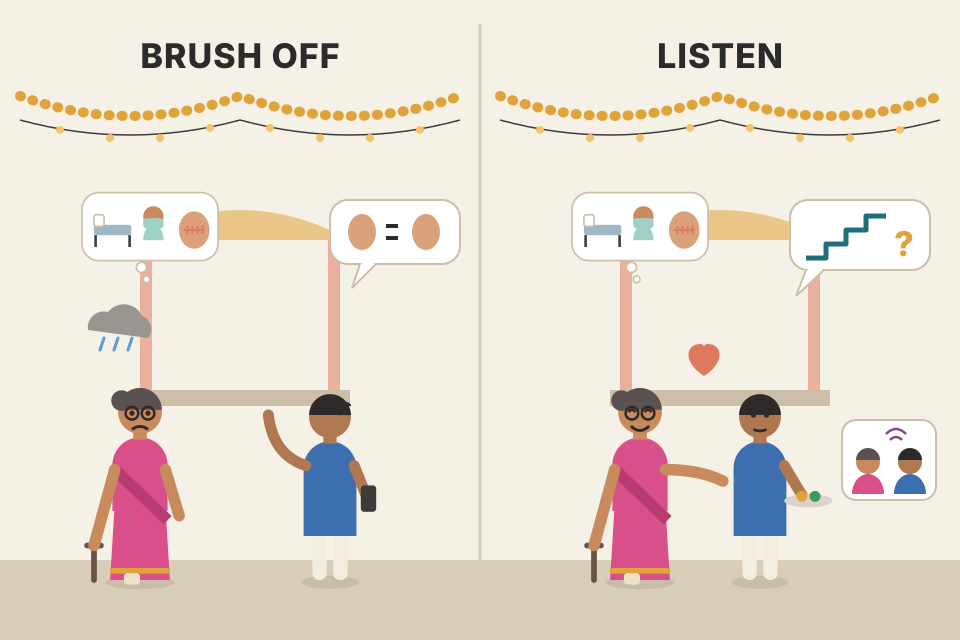

DALE CARNEGIE · HOW TO WIN FRIENDS · PART THREE · CHAPTER 9 · PDF p177–183
What Everybody Wants
Before you try to change someone's mind, show them you understand why they feel the way they do. Most people are quietly starving for exactly that.
Carnegie offers what he calls a magic phrase: tell the angry person you don't blame them for feeling as they do, and that in their place you would feel the same. He argues you can say it with complete honesty, because with their history and temperament you really would. Then he proves the phrase in action: his own radio blunder about Louisa May Alcott and the furious listener he turned into a friend, President Taft and a mother who lobbied for her son, an escalator repair in a busy hotel, a piano teacher and a student's beloved fingernails, and the impresario Sol Hurok coaxing a sulking opera star onto the stage. The chapter closes with a psychologist's observation that sympathy is something every human being craves, from the child showing off a scraped knee to the adult retelling an operation.
Principle 9 of Part Three
Be sympathetic with the other person's ideas and desires.
How the chapter fits together
pdf p177–183 · read this first
Where it sits. This is chapter 9 of Part Three, "How to Win People to Your Way of Thinking", the longest part of the book with twelve principles. The part began with avoiding arguments (Ch.10), respecting opinions (Ch.11), admitting your own mistakes (Ch.12) and starting friendly (Ch.13). The chapter just before this one asked you to see things from the other person's point of view (Ch.17). This one adds the feeling to the seeing: once you understand their view, say so, warmly. Next comes appealing to people's nobler motives (Ch.19).
The argument as a chain. Each row reacts to the one before it.
Problemsomeone is angry, stubborn or unreasonable→arguing makes it worse
The tool"I don't blame you; in your place I'd feel the same"
Why honestsame body, mind, past (Capone)→you would be them→little credit, little blame
Why it worksthree people in four are hungry for sympathy→give it, and they warm to you
ProofAlcott listenerTaft's lettersMangum's escalatorBabette's nailsHurok and Chaliapin
Patternacknowledge their feeling→keep your decision or request→they come round
ScienceGates: sympathy is universally craved→Principle 9
About the title: "What everybody wants" is sympathy, the feeling that someone understands why you feel as you do. The chapter's principle names it plainly; the title keeps it as a teaser.
01 · THE TOOL
The magic phrase: "I don't blame you for feeling as you do"
pdf p177
Carnegie opens with a sales pitch for a single sentence. He asks whether you would like a phrase that stops arguments, clears away bad feeling, builds goodwill and makes the other person actually listen to you. Then he hands it over. In short, it has two halves:
No blame for the feeling. You tell the person you don't blame them at all for feeling the way they do.
You would feel the same. You add that if you were in their position, you would almost certainly feel exactly as they do.
"I don't blame you one iota for feeling as you do."The first half of Carnegie's "magic phrase" (pdf p177)
His two claims about it. First, it softens even the grumpiest, most hostile person you will ever meet. Second, and this is the important part, you can say it and mean it completely. It is not a trick or a polite lie: if you really were the other person, with everything that made them who they are, you would of course feel what they feel. The next plate is his argument for why that is true.
What the phrase does not say. It does not say "you are right", "I agree", or "I'll do what you want". It accepts the feeling, not the claim and not the demand. Every story in this chapter keeps that split: the person feels understood, and the decision often stays the same.
Dated wording. The book says the phrase will soften "the most cantankerous old cuss alive", and speaks of "he" throughout. Today: the most difficult person you deal with, of any gender.
Picture it

A passenger at a railway reservation counter has been in the queue for forty minutes, and the train is now waitlisted. He starts shouting at the clerk. One clerk snaps back, "Sir, I don't make the trains." Another says, "Forty minutes in this heat and then a waitlist; I'd be furious too. Let me check the Tatkal quota and the next train." The ticket situation is identical. The second clerk gets a calm passenger who listens.
Where it breaks: the clerk can often offer a small fix. Carnegie's phrase has to work even when you can offer nothing at all, and in his stories it often does, because the sympathy itself is what the person was missing.
What's happening behind it
The book's explanation: the phrase works because it is true (next plate) and because most people are starved of sympathy, so receiving it disarms them.
Beyond the book: one way to see it is that anger is partly a demand to be understood; grant the understanding at once and there is little left to fight for. Psychologists call this validation: telling someone their emotion makes sense given their situation, without endorsing everything they did. In Marsha Linehan's dialectical behaviour therapy it is a core skill precisely because it lowers emotional intensity enough for problem-solving to start. Hostage and crisis negotiators train the same move under the name emotional labelling ("It sounds like you feel nobody is listening"); research by Matthew Lieberman and colleagues (2007) found that simply putting feelings into words reduces activity in the amygdala, the brain's alarm system.
At work
A senior engineer pings you, clearly annoyed: their design was overruled in a meeting they could not attend. The urge is to explain why the decision was right. Instead, start with the first box: "That's frustrating, having it decided while you were out. I'd be annoyed too." Then the facts, and an offer to revisit if there is something the room missed. Most of the heat goes out with the first sentence.
Interview angle. "Tell me about a time you dealt with an upset stakeholder." Strong answers show a step where you acknowledged the person's frustration before you explained or fixed anything, and say what that changed in the conversation.
Worked example: the same reply, two ways
Defend first
"The release was delayed because QA found two blockers. This was communicated in the channel on Monday."
True, and it reads as "you should have read the channel". The client now argues about the communication.
Sympathize first
"I don't blame you for being frustrated; you had a demo planned around this date and I would be too. Here is what happened, and here is the new date we are confident in."
Same facts, same new date. The client feels heard and moves on to planning.
Connects to
Seeing the other person's point of view, the step just before this one: Part Three, Ch.8.
Capone, the rattlesnake, and "there, but for the grace of God, go I"
pdf p177
Carnegie's case that the magic phrase is sincere is a thought experiment, and he picks the hardest example he can.
Imagine being Al Capone. Suppose you had been born with exactly Capone's body, temperament and mind, and had lived through exactly his surroundings and experiences. Then, Carnegie says, you would have been exactly what he was and ended up exactly where he did, because those things, and only those things, made him who he was.
The rattlesnake line. He puts it bluntly: the only reason you are not a rattlesnake is that your parents were not rattlesnakes. You did not choose the starting point that made you you.
So: little credit, little blame. You deserve very little credit for being who you are. And by the same logic, the irritated, prejudiced, unreasonable people who come to you deserve very little blame for being who they are.
The attitude to take. Feel sorry for them. Pity them. Sympathize. Say to yourself the old line, "There, but for the grace of God, go I": with a different roll of the dice, that would be me.
The payoff. He estimates that three-fourths of the people you will ever meet are hungry and thirsty for sympathy. Give it, and they will love you for it.
Try it: swap places
Pick a person who annoyed you recently. Tick each thing you actually know about their situation. The more you tick, the easier the magic phrase becomes to say honestly.
Picture it

Two mango saplings from the same nursery are planted in different places: one in a well-watered Konkan garden, one by a dusty highway in Rajasthan. Years later one is tall and heavy with fruit, the other stunted and twisted. Nobody says the stunted tree is wicked. You look at its soil, water and wind and you understand completely.
Where it breaks: trees make no choices; people do. Carnegie's argument leans hard on "only those things made him what he was", and most of us believe people still carry some responsibility for what they do. You can use the picture to soften your feeling toward someone without deciding they are not accountable.
What's happening behind it
The book's explanation: our dislike of difficult people rests on an unspoken idea that we are better than them by our own effort. Once you see how much of anyone's character comes from things they never chose, contempt is hard to sustain, and sympathy comes naturally.
Beyond the book: this is the antidote to the fundamental attribution error, our habit of explaining other people's bad behaviour by their character ("he's rude") while explaining our own by circumstances ("I was exhausted"). Deliberately listing someone's circumstances is one of the few things that reliably weakens it. Carnegie's stronger claim, that circumstances explain everything, is a form of determinism that philosophers still argue about; you do not need to accept it to use the practical point.
At work
A colleague in another team keeps rejecting your API change requests with curt one-word replies. Before you escalate, do the Capone swap: they may be the only maintainer, covering on-call, with a manager who blamed them for the last outage caused by someone else's change. With that history, you would be curt and protective too. You still need the change; you now ask for it as someone who understands their load ("I know you're the only one on this; can I write the migration and the tests so it's a review, not a project?").
Connects to
Capone also opens the book: he saw himself as an unappreciated public benefactor, the start of the case against criticism in Part One, Ch.1.
"Instead of condemning, try to understand" is the same idea at the end of that chapter.
03 · CARNEGIE'S OWN TEST
The Louisa May Alcott blunder, and the angry listener who ended up a friend
pdf p177–179
a Sunday radio broadcastConcord, Massachusetts vs New Hampshiresaid it twicea listener in Philadelphia
The blunder. Carnegie gave a radio talk about Louisa May Alcott, the author of Little Women. He knew perfectly well she had lived and written in Concord, Massachusetts. But, not thinking, he said he had visited her old home in Concord, New Hampshire. Once might have slipped by. He said it twice.
The flood. Letters and telegrams poured in, stinging, many indignant and a few downright insulting. One came from a woman who had grown up in Concord, Massachusetts, came from an old, proud family there, and was then living in Philadelphia. Her letter was so scorching, he says, that she could hardly have been angrier if he had called Alcott a cannibal.
His first reaction. Honest and unflattering: he was tempted to fire back that her manners were a bigger failing than his geography, and then to really let her have it.
The choice. He held back, reasoning that hitting back is what any hothead would do and he wanted to do better. He made it a game: could he turn her hostility into friendliness? He reminded himself that in her place he would likely feel the same, and set out to sympathize.
The phone call. Next time he was in Philadelphia, he rang her. The step-through below follows the conversation move by move.
Step through the phone call
What Carnegie takes from it. Because he apologized and sympathized with her point of view, she began apologizing and sympathizing with his. He got three things: the satisfaction of keeping his temper, the satisfaction of answering an insult with kindness, and far more real enjoyment from winning her over than he could have had from telling her to go and jump in the Schuylkill (Philadelphia's river).
Dated wording. The book calls her a "Colonial Dame" (a member of a heritage society of old American families) and uses the jokey "Thank God I'm not married to that woman". Today you would just say: a proud, long-established local who was offended on behalf of her town.
Picture it

A TV cricket commentator says on air that Sachin Tendulkar grew up in Pune. By evening his inbox is full of furious Mumbaikars. He could reply with a sarcastic "it was a slip of the tongue, relax". Instead he calls the angriest viewer: "You're right, it was a silly mistake, and I'd be annoyed too if someone got my city wrong. Thank you for taking the trouble to write." The viewer, who had been ready for a fight, ends up apologizing for her tone and inviting him to her son's cricket academy.
Where it breaks: here the commentator was plainly wrong, so sympathizing cost nothing. It is much harder when you think the angry person is also wrong; that is what the Taft story on the next plate tests.
What's happening behind it
The book's explanation: sympathy is returned in kind. She came ready to defend her letter; when Carnegie agreed with her feelings and blamed himself, there was nothing to defend, so she turned to examining her own behaviour instead.
Beyond the book: social psychologists call this reciprocity: people feel a strong pull to return what they receive, including concessions and apologies. It also matches research on apologies (for example by Roy Lewicki, 2016) finding that acknowledging responsibility is the single most effective part of an apology, more than explanations. Note that Carnegie also made an offer of repair: he had already corrected himself on air the next Sunday.
At work
You shipped a release note that called a customer's region by the wrong name, and their admin sends a sharp email. Reply the Carnegie way: thank them for catching it, own the mistake fully ("that was careless of us"), say what you already fixed (the corrected note), and invite them to flag anything else they spot. You turn your harshest reviewer into a helpful one.
Interview angle. "Tell me about a mistake you made that affected a customer." Show the sequence: owned it quickly, fixed it publicly, followed up personally with the most upset person, and the relationship came out stronger.
Not firing back at the letter is the "don't criticize" reflex from Ch.1, and inviting her to write again feeds her sense of importance (Ch.9).
04 · SYMPATHY THAT HOLDS THE LINE
President Taft, the disappointed mother, and the letter locked in a drawer
pdf p179–180
Carnegie notes that every President deals with prickly human problems almost daily, and that William Howard Taft learned from experience how well sympathy neutralizes hard feelings, the way an alkali neutralizes an acid. Taft told this story himself in his book Ethics in Service; Carnegie quotes it at length. Here it is in short.
Washingtonsix weeks of lobbyinga technical posttwo letters, same handwritinga White House musicale
The campaign. A woman in Washington, whose husband had some political influence, spent six weeks or more pressing Taft to give her son a particular government job. She brought along a large number of Senators and Congressmen and made sure they spoke up for him forcefully.
The decision. The post needed technical qualifications. Taft followed the recommendation of the head of the Bureau concerned and appointed someone else.
Letter one. The mother wrote calling him ungrateful: he could easily have made her happy and had not, and this after she had rounded up her state delegation's votes for a bill he especially cared about.
Taft's method: the drawer. His advice, in short: your first impulse is to be severe, and you may even draft the sharp answer. A wise person locks it away for two days (such letters can always wait that long), and after two days does not send it. That is what he did.
Reply one. As polite a letter as he could write: sympathy for her disappointment as a mother, the real reason (a technical post, filled on the Bureau head's advice, not by his personal choice), and a good wish for her son's future. She calmed down and wrote to say she was sorry.
Letter two. The appointment was slow to be confirmed, and a new letter arrived, signed as if from her husband but in her handwriting. It claimed her disappointment had put her in bed with a nervous collapse and a grave stomach cancer, and asked him to swap in her son to restore her health.
Reply two. To the husband: sympathy for the illness and his worry, and still no.
The ending. His appointee was confirmed. Two days after that letter, the Tafts held a musical evening at the White House, and the very first two guests to greet Mrs Taft and the President were this husband and wife, the wife lately supposed to be at death's door.
The point. Taft gave sympathy twice and gave way zero times. He acknowledged a mother's disappointment and a husband's worry, explained the real reason for his decision, wished the son well, and kept his decision exactly as it was. The sympathy did not change the outcome; it changed how she felt about the outcome, and kept a politically connected family friendly.
Reflect, then reveal: Taft's drawer
Think of a message that recently made you angry (a Slack thread, an email, a family WhatsApp). Write the reply you wanted to send. Nothing is saved or sent.
Picture it

A school principal in Chennai gives the last seat in the science stream to the student with the higher marks. A parent who sits on the school's fund-raising committee storms in, reminding her of all the donations they arranged. The principal says: "I understand completely; any parent would want this for their child. The seats go strictly by marks, and I can't change that. Your son has done well in commerce and I hope he does brilliantly there." A month later the same parent is first in line to help at the annual day.
Where it breaks: the principal has a clear, public rule to point to. Taft did too (the Bureau head's recommendation). When your "no" rests only on your own preference, sympathy alone will not make it feel fair; you need a reason the other person can respect.
What's happening behind it
From the story: the mother's real grievance was feeling unvalued after all her effort. Taft's letters answered that (he recognized her disappointment and hoped for her son's future) while refusing the request. Once the feeling was handled, the request lost its heat.
Beyond the book: organizational researchers call this interactional justice: people accept an unfavourable decision far better when they are treated with dignity and given an honest explanation. Studies by Robert Bies and others find that how a "no" is delivered strongly shapes whether people stay loyal. The two-day drawer also works: strong anger fades within hours to days, so delaying a reply lets you answer the situation rather than your own pulse.
At work
You chose another engineer for the tech-lead role on a new project. A candidate who was passed over sends you a long, bitter message listing every late night they put in. Draft your real reply in your notes, wait until tomorrow, then send the Taft version: you understand the disappointment and value the work they listed; the choice came down to specific experience the role needed (be concrete); and you want to talk about what would put them in line for the next one. If they push again, repeat the sympathy and the decision, both unchanged.
Interview angle. "Tell me about a time you had to say no to someone senior or influential." Show that you acknowledged their stake, gave the real reason, and kept the relationship, without reversing a correct decision under pressure.
Worked example: declining a pushy request
Severe
"Lobbying me through three directors is not how hiring works here. The decision is final."
All true. It shames them, and you have made an enemy with three allies.
Taft's way
"I can see how much you wanted this for him, and I'd feel the same. The role needs Kubernetes production experience, so I followed the panel's recommendation. He's doing great work on the data team, and I'd be glad to help him build toward the next opening."
Same decision. Sympathy, the real reason, a hopeful word about their future.
Connects to
The unsent letter is Lincoln's habit too (his never-mailed letter to General Meade): Part One, Ch.1. Taft also appears there, on the receiving end of Roosevelt's attacks.
The situation. Jay Mangum worked for an elevator and escalator maintenance company in Tulsa that looked after the escalators in one of the city's leading hotels. The hotel manager would not allow the escalator to be shut down for more than two hours at a time, because he did not want to inconvenience his guests. The repair now needed would take at least eight hours, and Mangum's company could not always have a specially qualified mechanic free whenever it suited the hotel.
The move. When Mangum managed to book a top mechanic for the job, he phoned the manager, Rick. Instead of arguing for the time he needed, he did three things in order:
Named the manager's concern (a busy hotel, shutdowns kept short).
Sided with it, and offered to accommodate him as far as possible.
Showed how the same concern pointed the other way: a half-done repair risked worse damage and a breakdown lasting several days, which would hurt guests far more.
The result. The manager had to agree that eight hours was better than several days. Because Mangum sympathized with his wish to keep guests happy, he won the manager round easily and with no ill feeling.
Why it worked. Mangum did not try to make the manager care less about his guests. He made the manager's own goal the reason for the long repair. The sympathy was not decoration; it was the frame for the argument.
Rewrite it: ask for downtime the Mangum way
Pick a blunt request, think how you would rewrite it, then reveal a Carnegie-style version and what changed.
Picture it

A housing society in Pune needs to shut off the water for a full day to replace a rusted main pipe. The secretary knows residents hate even a morning without water. So the notice does not say "Water will be off Saturday. No exceptions." It says: "We know how hard a day without water is, especially with kids and elderly at home. The old pipe is close to bursting, and if it goes we could be without water for a week. One planned Saturday, with tankers on standby, saves us that." The residents grumble, fill their buckets, and agree.
Where it breaks: the argument only works if the bigger risk is real. If the secretary exaggerates the danger to get his way, residents find out the next time and stop believing the notices.
What's happening behind it
The book's explanation: by sympathizing first, Mangum stopped the conversation from being "your schedule vs my guests". It became "how do we protect your guests", a question they could answer together.
Beyond the book: negotiators call this moving from positions ("only two hours") to interests ("happy guests"), the core idea of Fisher and Ury's Getting to Yes (1981). Once you know the interest behind a position, you can often show that a different position serves it better. Framing the long repair as avoiding a bigger loss also uses loss aversion: people weigh a possible several-day outage more heavily than a certain eight hours.
At work
This is the maintenance-window conversation every backend engineer has. The product manager wants zero downtime for the database migration; you need a four-hour write freeze. Do not argue that four hours is "industry standard". Say you know the launch metrics matter and that users hate an outage; then explain that a rushed online migration risks inconsistent data and a multi-day clean-up that users would feel far more. Offer the lowest-traffic window, with a status-page notice. You are on their side, and the four hours are how you stay there.
Interview angle. "Tell me about a time you pushed back on a product requirement." Frame it as Mangum did: you understood the requirement's goal, then showed how your proposal served that goal better.
Joyce Norris and Babette's fingernails: admire what they'd be giving up
pdf p181–182
St. Louis, Missouripiano teachera teenage studentlong, beautiful nailsone week
The problem. Joyce Norris, a piano teacher, described a difficulty common with teenage students. Her new pupil Babette had very long fingernails, a real handicap for anyone trying to build good piano technique.
What she held back. In their talks before lessons began, Mrs Norris said nothing about the nails. She did not want to put Babette off taking lessons, and she knew Babette would not want to lose something she was so proud of and took such care over.
The move. After the first lesson, at a moment that felt right, she combined three things: honest admiration for Babette's hands and nails, a link to Babette's own goal (playing as well as she could, and much more easily, with shorter nails), and no pressure (just think about it).
The reaction. A clear no on Babette's face. Mrs Norris raised it with the mother too, again admiring the nails. Another no.
The result. At the second lesson, a week later, the nails were trimmed. Mrs Norris praised the sacrifice and thanked the mother, who said she had had no part in it: Babette decided alone, and it was the first time she had ever cut her nails for anyone.
What Carnegie points out. Mrs Norris did not threaten, and she did not say she would refuse to teach a student with long nails. She let Babette know the nails were something beautiful and that cutting them would be a real sacrifice. In effect she said she understood the cost of the change, and that the payoff in Babette's music would be worth it.
What she sympathized with
Babette's pride in her nails, the care she put into them, and the fact that cutting them was a genuine loss.
What she still asked for
Shorter nails, tied to Babette's own goal: playing as well as she could and wanted to.
Picture it

A Kathak guru in Lucknow takes on a teenage student who arrives with heavy, jingling designer anklets she loves. They are wrong for training. The guru doesn't scold. She says, "These are beautiful, and I can see you chose them with care. Save them for your first performance; for practice, the plain ghungroo will let you hear your footwork clearly, and you'll get there faster." Next week the student turns up in the plain ones.
Where it breaks: the guru offered a way to keep the treasured thing for later. Babette's nails had to be cut, with no "save it for the stage" option, which makes her choice, and Mrs Norris's sympathy, all the more striking.
What's happening behind it
The book's explanation: by admiring the nails, Mrs Norris showed she understood what she was asking Babette to give up. That turned an order into a choice, and the choice into a sacrifice Babette could feel proud of.
Beyond the book: two well-studied effects are at work. Reactance (Jack Brehm, 1966): when people feel their freedom is threatened, they cling harder to the threatened thing, so "cut your nails or I won't teach you" would likely have backfired. And autonomy: a change people choose for themselves sticks far better than one imposed, which is exactly why Babette did it "on her own". The first "no" face was not failure; people often need a few days to come round to a suggestion they were given room to consider.
At work
A strong engineer has a beloved homegrown framework that the team now needs to retire for a standard library. Order it and you will get months of quiet resistance. Do it the Norris way: in a 1:1, say honestly what is good about it ("it solved a real problem before the library existed, and the API is cleaner in places"), acknowledge that retiring it is a real loss, then link the change to their own goals ("you'd stop being the only person who can fix it at 2 a.m., and you'd have time for the caching work you want"). Ask them to think about it. Then wait.
Interview angle. "Tell me about a time you persuaded someone to give up something they cared about." Mention that you recognized its value openly, tied the change to their goal, and gave them time to decide.
Worked example: retiring someone's pet framework
Rule first
"We're standardizing. Your config framework gets deleted next quarter; please migrate your services."
Clear, and likely to earn months of quiet foot-dragging.
Sympathy first
"Your framework carried us for three years, and I know how much of you is in it, so this isn't an easy ask. Moving to the standard library would get you off the 2 a.m. pager for it and free you for the caching work you wanted. Have a think and tell me what worries you."
Honours what they would lose, ties the change to their goal, leaves the decision time.
Connects to
Beginning with sincere praise before asking for a change: Part Four, Ch.1; praising the improvement when it comes, as she did at lesson two: Part Four, Ch.6.
Letting the other person feel the idea is theirs: Part Three, Ch.7.
07 · TEMPERAMENTAL TALENT
Sol Hurok and Chaliapin: "of course you cannot sing tonight"
pdf p182–183
Sol Hurok, impresarioalmost 50 years managing starsChaliapin, Isadora Duncan, Pavlova3 years with Chaliapinthe Metropolitan Opera
The man. Sol Hurok was probably America's leading impresario (a promoter and manager of performers). For nearly half a century he handled world-famous artists, among them the bass singer Feodor Chaliapin, the dancer Isadora Duncan and the ballerina Anna Pavlova. He told Carnegie that one of the first lessons he learned in managing temperamental stars was that they needed sympathy, then more sympathy, then more again, for all their quirks.
The problem star. For three years Hurok managed Chaliapin, one of the greatest basses ever to perform for the wealthy boxholders at the Metropolitan Opera. He was also a constant headache who behaved like a spoiled child.
"He was a hell of a fellow in every way."Sol Hurok on Chaliapin, as quoted by Carnegie (pdf p182)
The routine. Around noon on a performance day, Chaliapin would phone to say his throat was ruined and he could not sing. Hurok never argued; he knew that was no way to handle artists. He hurried to the hotel and agreed with everything, offered to cancel on the spot, and mentioned in passing that cancelling would cost the singer a couple of thousand dollars, a trifle beside his reputation.
The dance. Chaliapin would sigh and ask him to check back at five. At five, the same scene: full sympathy, another offer to cancel, another sigh and a request to come back later. By half past seven the singer would agree to perform if Hurok first announced to the Metropolitan audience that he had a bad cold. Hurok would promise, without meaning to keep the promise, because it was the only way to get him on stage.
Look at what Hurok actually did. He agreed with every complaint, offered the very thing Chaliapin claimed to want (cancellation), and quietly mentioned its cost in a way that respected the singer's pride ("nothing compared to your reputation"). Faced with no resistance to push against, Chaliapin talked himself into singing. The book also states plainly that the last step was a lie: Hurok promised an announcement he never meant to make.
Step through one performance day
Picture it

A star batsman calls the team manager on the morning of a big match: his back is stiff, he can't play. The manager doesn't say "you're fine, stop fussing". He goes to the hotel: "Of course, health first. I'll tell the selectors you're out; it's only one match, your career matters more." The batsman says to check again after the warm-up. After the warm-up he says he'll bat, as long as the manager tells the TV crew he's playing through pain. The manager nods.
Where it breaks: in cricket, a real injury is a real risk, and agreeing to cancel too readily could be the right call. Hurok's method only works when the complaint is mostly nerves, and it relies on the manager reading that correctly every time.
What's happening behind it
The book's explanation: temperamental people want their feelings taken seriously. Arguing ("you sound fine") would have made Chaliapin defend his sore throat to the death. Sympathy removed the fight and left him alone with his own wish to sing.
Beyond the book: therapists know this pattern as rolling with resistance, a core idea of motivational interviewing (Miller and Rollnick): argue for change and the person argues against it; reflect their reluctance and they start voicing their own reasons to change. Performance anxiety also usually peaks hours before going on stage and eases as the moment nears, which is why time (noon, five, seven-thirty) was on Hurok's side. Hurok's final promise, though, is manipulation by any modern standard; it works once, and a star who catches it may never trust you again.
At work
The most talented engineer on the team says on release morning that they are "not comfortable" signing off and might pull their service from the launch. Don't argue that the tests are green. Take the worry seriously: "Then let's not ship something you're uneasy about. Do you want me to tell the PM we'll hold your service? It'd move the launch a week, but your call matters more." Very often they will then walk through what is worrying them, find it is smaller than it felt, and ship. If it is real, you have found it before your users did. What you should not copy is the lie: if you promise to tell the PM something, tell the PM.
Which response? Handling the difficult star
Pick a response to see how Carnegie would judge it.
Connects to
Letting the other person do most of the talking until they reach their own conclusion: Part Three, Ch.6.
Appealing to their pride in their reputation is close to giving people a fine reputation to live up to: Part Four, Ch.7, and appealing to nobler motives in the next chapter, Ch.19.
08 · THE SCIENCE AND THE RULE
Everybody craves sympathy: Arthur Gates, and Principle 9
pdf p183
Carnegie closes with a psychologist rather than a story. Dr Arthur I. Gates, in his textbook Educational Psychology, observed that human beings everywhere crave sympathy, and gave everyday evidence:
Children eagerly show off their injuries, and some will even give themselves a cut or bruise to collect plenty of sympathy.
Adults do the same in grown-up form: they show their bruises, tell the story of their accidents and illnesses, and especially love going over the details of their surgeries.
Self-pity over misfortunes, real or imagined, is, to some degree, practised by almost everyone.
From that, the rule: if you want to win people to your way of thinking, put it into practice.
Principle 9 of Part Three
Be sympathetic with the other person's ideas and desires.
Notice the two objects. The principle asks for sympathy with ideas (what they think: the listener's view that getting Concord wrong was an insult) and with desires (what they want: a mother's wish for her son, a manager's wish to keep guests happy, a girl's wish to keep her nails, a singer's wish not to be embarrassed). The chapter's stories cover both.
Story
What they felt or wanted
How sympathy was shown
What did not change
Alcott listener
Pride in her home town, offended
Thanked her, owned the blunder, invited more corrections
Nothing needed to; he was wrong
Taft
A mother's wish for her son's job
Recognized her disappointment, hoped for her son's future
The appointment
Mangum
Keep hotel guests happy
Named and shared the concern
The 8-hour repair
Norris
Keep her beautiful nails
Admired them, treated cutting as a sacrifice
Nails still had to go
Hurok
Not to fail on stage
Agreed he could not sing, offered to cancel
The performance went ahead
Picture it

At any Indian family wedding, an aunt will corner you to describe her knee operation in full: the surgeon, the hospital, the stitches, the physiotherapy. If you say "oh, my friend had that, it's very common", she is hurt. If you say "that sounds painful, how are you managing the stairs now?", you have a friend for life, and she will happily listen to your news afterwards.
Where it breaks: the aunt's need is simple and the cost to you is ten minutes. At work, sympathy has to sit next to a deadline or a decision, and it is harder to give without feeling you are giving in. The earlier plates show it is possible.
What's happening behind it
The book's explanation, via Gates: the hunger for sympathy is universal and starts in childhood, so it is a reliable lever with almost anyone. Feed it, and people become far more open to what you want.
Beyond the book: modern research generally separates sympathy (feeling sorry for someone) from empathy (understanding and sharing their feeling from the inside). Carnegie's magic phrase ("in your place I'd feel the same") is closer to empathy, and Brené Brown and others argue empathy connects while pity can feel condescending. Studies of physicians using Mohammadreza Hojat's Jefferson Scale of Empathy link doctors' empathy to better patient outcomes and patients following advice more closely, the medical version of "win people to your way of thinking".
At work
Everyone at work shows their bruises: the on-call engineer who mentions they were up at 3 a.m., the PM describing a brutal leadership review, the client saying their budget was cut. Most of us skip straight past to the agenda. Pause for one sentence ("Three in the morning, that's rough; did it settle down?"). It costs seconds and makes the next ask much easier.
Interview angle. Interviewers ask about empathy directly ("How do you handle a teammate who is struggling?"). A good answer shows you noticed, acknowledged the feeling before problem-solving, and still made sure the work got done, often by adjusting it.
Self-audit: this week, did I…
Connects to
Being a good listener and encouraging people to talk about themselves: Part Two, Ch.4.
The next principle, appealing to nobler motives: Part Three, Ch.10. The full list of Part Three principles is at the end of Ch.21.
09 · WRAP-UP
Summary and key terms
pdf p177–183
The magic phrase. Tell an upset person you don't blame them for how they feel and that in their place you'd feel the same. It stops arguments and makes people listen, and it can be said sincerely.
Why it is sincere. With Capone's body, mind and experiences you would have been Capone; you're not a rattlesnake only because your parents weren't. So you deserve little credit for who you are, and difficult people little blame. "There, but for the grace of God, go I." About three in four people are hungry for sympathy.
The Alcott listener. Carnegie said "Concord, New Hampshire" twice on air, got a scorching letter, resisted firing back, phoned the writer, thanked her and took all the blame. She apologized, explained her pride, and said she'd like to know him better.
Taft. Refused a mother's six-week campaign for her son's technical appointment. Locked his severe reply in a drawer for two days, then sent polite, sympathetic letters (twice, the second to the "husband" in her handwriting) without changing the decision. The couple were first to greet the Tafts at a White House musicale.
Mangum. Named the hotel manager's wish to keep guests happy, then showed that a full 8-hour repair protected guests better than risking a several-day breakdown. Agreement without rancour.
Norris. Admired Babette's nails, framed cutting them as a sacrifice for better playing, and left the choice to her. A week later they were trimmed, for the first time ever for anyone.
Hurok. "Sympathy, sympathy and more sympathy" for temperamental stars. With Chaliapin he agreed he couldn't sing and offered to cancel, until the singer chose to perform; then made a promise he didn't keep.
Gates. Sympathy is universally craved: children show (even inflict) injuries, adults recount accidents and operations, and nearly everyone indulges in some self-pity.
Principle 9: Be sympathetic with the other person's ideas and desires. Sympathize with the feeling; decide the request on its merits.
Term or phrase
Meaning on this page
Where
Principle 9
Be sympathetic with the other person's ideas and desires.
pdf p183
The magic phrase
"I don't blame you for feeling as you do; in your place I'd feel the same."
pdf p177
The Capone argument
Same body, mind and history would make you the same person, so blame little and sympathize.
pdf p177
"There, but for the grace of God, go I"
The attitude to take toward irritated, unreasonable people.
pdf p177
Three-fourths
Carnegie's estimate of how many people are hungry for sympathy.
pdf p177
Making it a game
Treating an insult as a challenge: turn this hostility into friendliness.
pdf p178
The two-day drawer
Taft's habit: write the severe answer, lock it away for two days, then don't send it.
pdf p180
Sympathy that holds the line
Acknowledging feelings without reversing the decision (Taft, Mangum, Norris).
pdf p179–182
Impresario
A promoter and manager of performers, like Sol Hurok.
pdf p182
Self-pity
Gates: a near-universal habit of seeking sympathy for misfortunes, real or imagined.
pdf p183
10 · USE IT
Practice this week
beyond the book
Small exercises, each with a way to tell whether it worked. The exercises are ours; the ideas behind them are the chapter's.
Say the phrase once. The next time someone is annoyed with you or near you, open with your own version of "I don't blame you for feeling that way; I'd feel the same." Worked if: their next sentence is calmer than their first.
The Capone swap. For one person who irritates you, write three facts about their situation you didn't choose for them (workload, manager, history). Worked if: you can say the magic phrase to them without it feeling fake.
Taft's drawer. For any message that makes your face hot, draft the reply in a notes app and send nothing until the next day. Worked if: you send a shorter, calmer version, or nothing at all.
Name the worry first. Before your next request that costs someone something (downtime, a scope cut, extra review), start by naming their concern in one sentence, Mangum-style. Worked if: they argue about the details, not the whole request.
Notice the bruises. Each day, catch one person mentioning a hard thing (a late night, a sick child, a bad review) and respond to it before the agenda. Worked if: by Friday someone tells you more than usual.
Sympathy and a firm no. If you have to refuse someone this week, use the Taft pattern: their feeling, your real reason, a hope for their future. Worked if: the "no" stands and the relationship does too.
11 · LIMITS
Where it can go wrong
pdf p177–183 · plus beyond the book
What the book itself shows.
Sympathy is not surrender. Taft refused twice, Mangum got his eight hours, Babette's nails still had to go. In every story but Carnegie's own (where he really was wrong), the sympathizer's position stayed the same.
The feelings can be partly staged. Taft's "husband's" letter was in the mother's handwriting and the illness vanished by the musicale; Chaliapin's sore throat recovered by half past seven. Carnegie's heroes sympathize anyway, but they don't let the drama decide.
Hurok lied. The book reports, without criticism, that Hurok promised an announcement he never meant to make. Read that as a warning, not a technique: sympathy is meant to be sincere (that is the whole point of the Capone argument).
Carnegie had to fight his own temper. His first impulse with the Alcott listener was to hit back. The principle takes effort and self-control, and he frames it as a choice, almost a game.
Beyond the book: our critique
Fake sympathy is easy to spot. "I hear you" followed instantly by "but" has become a corporate cliché. If you don't actually feel any of it, the phrase sounds like a script and can make people angrier. Do the Capone swap honestly first.
Sympathy can reward manipulation. If tantrums reliably earn extra attention (Chaliapin's daily drama), you may be training more of them. Be warm about the feeling, consistent about the outcome, as Taft was.
Validating feelings is not validating actions. "I'd feel the same" is fine about anger; it is not fine about the harassing message the anger produced. Keep those separate.
The determinism goes too far. "Only those things made him what he was" erases responsibility entirely. You can use it to soften your feelings toward someone without excusing harmful behaviour or skipping consequences.
Sympathy vs pity. Carnegie's "feel sorry for the poor devils, pity them" can turn into condescension. Most people want to be understood as equals, not pitied from above. "In your place I'd feel the same" works better than "you poor thing".
Culture and context. In many Indian workplaces, open emotional talk with a senior can feel awkward; a quiet, practical acknowledgement ("this has been a heavy month for you") often lands better than a long empathic speech. In very direct cultures, too much sympathy before the point can read as stalling.
It can cost the sympathizer. Constantly absorbing others' frustration (support engineers, team leads, on-call) leads to compassion fatigue. Sympathy is a tool to use well, not a duty to be everyone's sponge.
The evidence is anecdotes. The stories are well chosen but not proof; later research on validation, reciprocity and interactional justice supports the general direction.
12 · TEST YOURSELF
Check yourself
pdf p177–183
Try to answer before opening each one. The first half is story recall; the second half is using the principle.
1. What are the two halves of Carnegie's "magic phrase", and what does he claim it does?
You don't blame the person at all for feeling as they do, and in their place you would feel just the same. He says it stops arguments, removes ill feeling, creates goodwill and makes the other person listen, and softens even the most difficult person.
2. How does Carnegie argue that you can say the phrase sincerely?
With the Capone thought experiment: given Capone's body, temperament, mind, environment and experiences, you would have been exactly what he was. You're not a rattlesnake only because your parents weren't. So you deserve little credit for who you are, and irritated, unreasonable people deserve little blame. Pity them and say "there, but for the grace of God, go I."
3. What fraction of people does Carnegie say are hungry for sympathy?
Three-fourths of the people you will ever meet. Give them sympathy and they will love you.
4. What was Carnegie's blunder in the Louisa May Alcott broadcast, and what made it worse?
He said he had visited her home in Concord, New Hampshire, when she lived in Concord, Massachusetts. He said it twice, which brought a flood of angry letters and telegrams.
5. What did Carnegie want to do with the angriest listener's letter, and what did he do instead?
He was tempted to answer that her rudeness was worse than his mistake. Instead he made it a game: he phoned her, thanked her for writing, took the whole blame and refused to let her share it, and invited her to keep correcting him. She apologized, explained her pride in her state, and said she would like to know him better.
6. What was Taft's method for answering an insulting letter?
Think how to be severe, perhaps write the answer, then lock it in a drawer for two days; such letters can always wait. When you take it out you won't send it. Then write as polite a letter as you can.
7. How did the Taft story end, and what had he changed?
He changed nothing about the decision. His appointee was confirmed; after his sympathetic reply to the "husband's" letter about her grave illness, the couple were the first to greet the Tafts at a White House musicale two days later.
8. How did Jay Mangum get the 8-hour shutdown?
He named the manager's wish to keep guests happy, sided with it, then showed that a partial repair risked a breakdown of several days, which would hurt guests far more. The manager agreed to eight hours, without ill feeling.
9. What did Joyce Norris do, and not do, about Babette's nails?
She waited until after the first lesson, admired the nails, tied shorter nails to Babette's own goal of playing well, and left it as something to think about. She did not threaten or refuse to teach her. A week later Babette had trimmed them on her own, the first time ever.
10. How did Sol Hurok handle Chaliapin's performance-day refusals?
He never argued. He agreed the singer couldn't perform and offered to cancel (mentioning the couple of thousand dollars it would cost), and came back at five and later. By seven-thirty Chaliapin agreed to sing if Hurok announced his bad cold, which Hurok promised without meaning to.
11. What did Arthur Gates observe about sympathy?
That humans universally crave it: children display or even inflict injuries to get it, adults show bruises and describe accidents, illnesses and operations, and self-pity over real or imagined misfortunes is practically universal.
12. Application: a client emails angrily that your API changed without notice and broke their integration. You did post a changelog. What is the Carnegie reply?
Lead with sympathy: you don't blame them for being frustrated; a broken integration is painful and you'd feel the same. Own what you can (the notice clearly didn't reach them), give the fix or workaround, and invite them to flag anything else. Mention the changelog only as a fact to improve, not as "you should have read it".
13. Application: does Principle 9 mean you should grant a teammate's request because they're upset?
No. Taft, Mangum and Norris all sympathized and kept their position. Sympathize with the feeling and the desire; decide the request on its merits, and explain the real reason.
14. Application: what part of Hurok's method should you not copy, and why?
The false promise to make the announcement. It contradicts the chapter's own claim that sympathy can be completely sincere, and in a team a broken promise costs far more trust than a delayed release.
15. Interview: "Tell me about a time you handled an upset stakeholder." How does this chapter shape a strong answer?
Show that you acknowledged their frustration before explaining, found the goal behind their demand (Mangum), gave the real reason for any "no" (Taft), owned your own mistakes quickly (Alcott), and kept the outcome right while the relationship improved.
13 · SOURCES
References
pdf p177–183
Book pages and other sources used on this page
Dale Carnegie, How to Win Friends and Influence People, revised edition (1981; Simon & Schuster 2009 printing), Part Three, Chapter 9, "What Everybody Wants", pdf p177–183. By page: the magic phrase, Capone, three-fourths p177; the Alcott broadcast and phone call p177–179; Taft p179–180; Jay Mangum p180–181; Joyce Norris and Babette p181–182; Sol Hurok and Chaliapin p182–183; Arthur Gates and Principle 9 p183.
W. H. Taft, Ethics in Service (1915), as quoted at length in the chapter (pdf p179–180). Retold briefly here, not reproduced.
A. I. Gates, Educational Psychology, as quoted in the chapter (pdf p183).
Beyond the book (named where used): M. Linehan on validation in dialectical behaviour therapy; M. Lieberman et al., "Putting feelings into words" (2007); R. Lewicki, B. Polin, R. Lount, "An exploration of the structure of effective apologies" (2016); R. Cialdini on reciprocity; R. Bies on interactional justice; R. Fisher and W. Ury, Getting to Yes (1981); D. Kahneman and A. Tversky on loss aversion; J. Brehm, A Theory of Psychological Reactance (1966); E. Deci and R. Ryan on autonomy; W. Miller and S. Rollnick, Motivational Interviewing; B. Brown on empathy vs sympathy; M. Hojat and the Jefferson Scale of Physician Empathy studies.